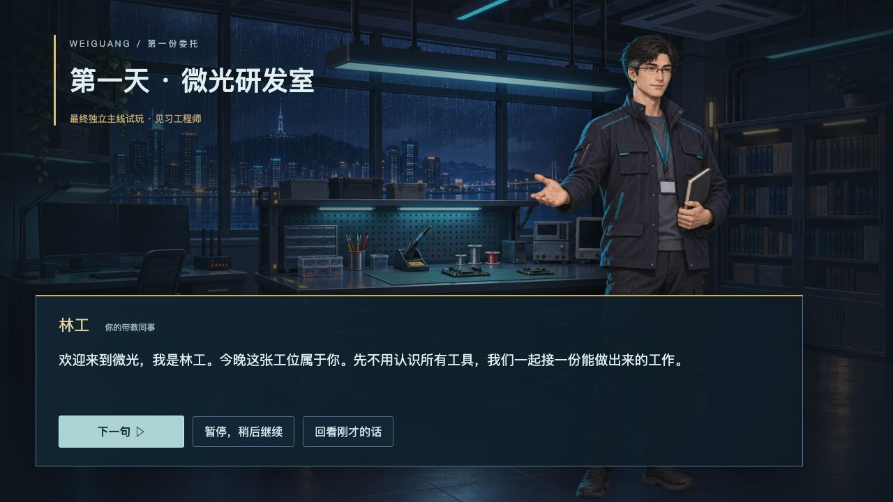
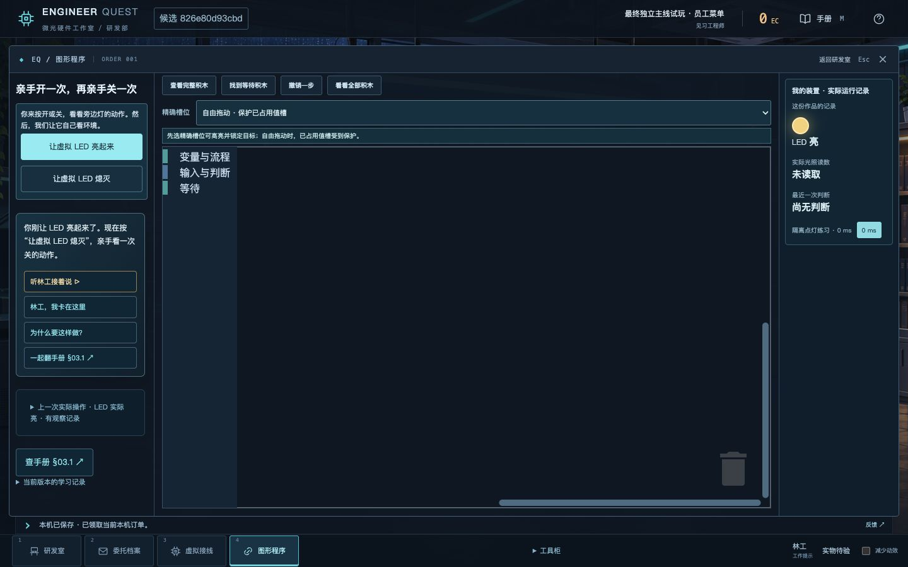
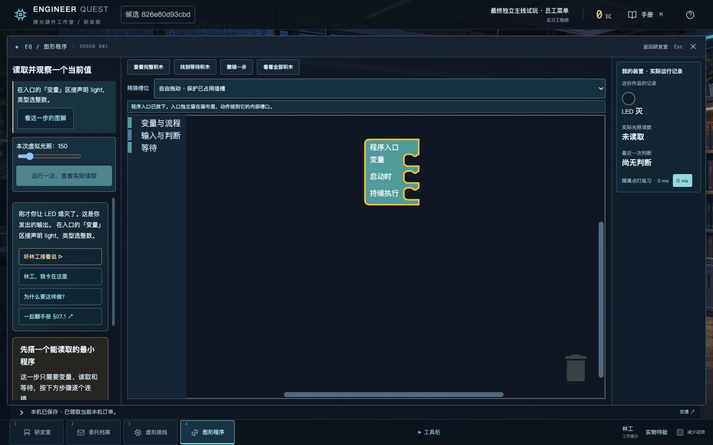
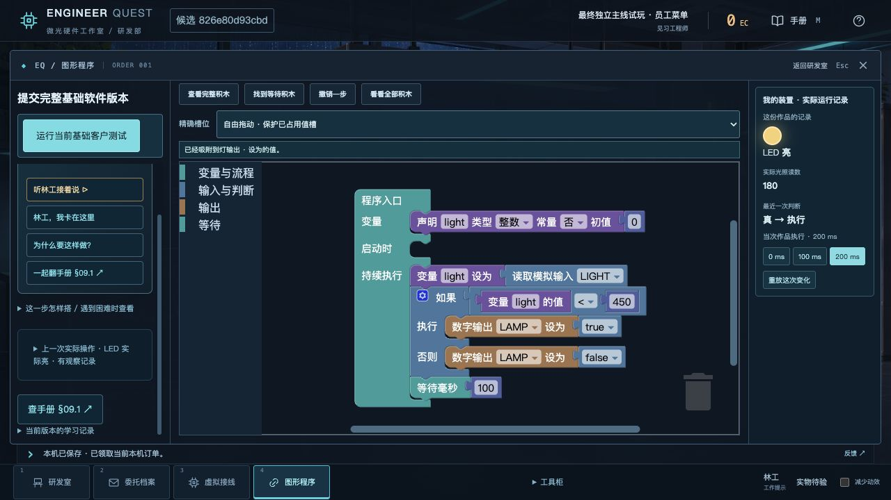
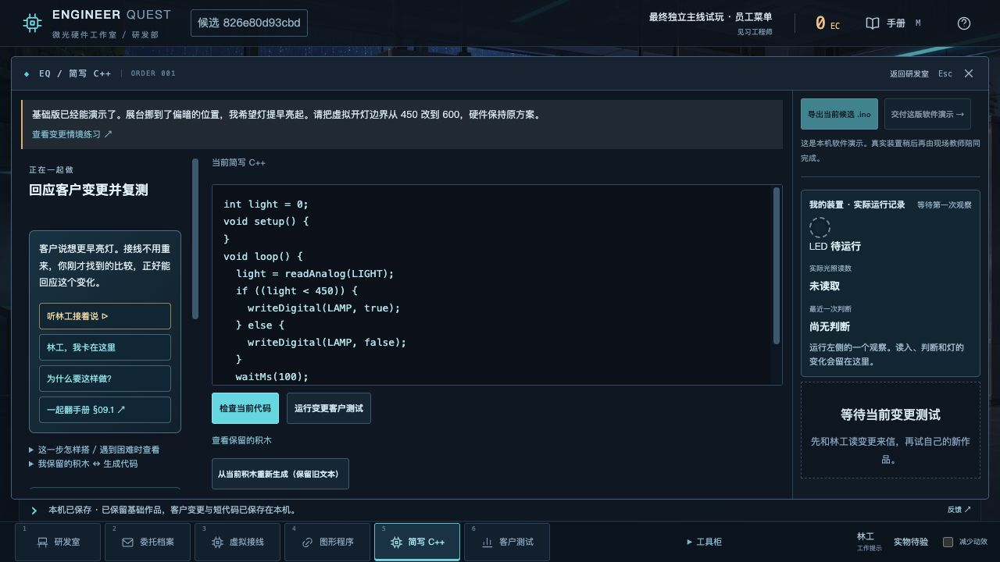
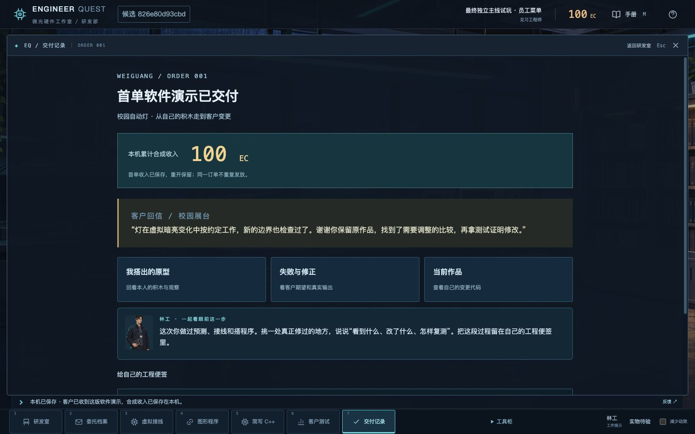

微光 · 首单任务书 / 01
第一天，先跟林工报到
首单：让校园展台的灯自己照顾环境。

参考示例截图，来源见页脚；HTML 中点击可放大。测试昵称仅为演示。
- 在空白工位填一个昵称，领取个人员工证。作品只存在当前浏览器，不必使用真实姓名。
- 全屏林工会自动出现。点「下一句 ▷」逐句看，到最后点「跟林工去收信 →」。
- 中途离开可点「暂停，稍后继续」；回来用「继续和林工说话」接着看，不必重新开始。
你来观察、接线、搭程序。林工和这本手册一次只帮眼前这一步。暂未开放的工具不用提前找。
到通信终端，点“向林工领取订单 →”。
微光 · 首单任务书 / 02
先观察，不急着写程序
客户要的是：暗下来亮，光回来灭，而且一直能响应。
客户的桌面
遮住光源，再看光照表的数如何变化。把反映眼前环境的信息交给林工，不用日期，也不用开机时留下的旧数。
- 接单后跟随全屏介绍，点「到客户桌边看看 →」。
- 在桌面点「遮住光源，再看读数」，对比变化前后，再用灯的动作演示客户想要的结果。
- 每次环境变化都再读一次。根据当前情境完成预测，不凭上一幕的灯态猜下一幕。
| 约定 | 灯应该怎样 |
|---|
| 光照小于 450 | 亮 |
| 等于或大于 450 | 灭 |
| 环境再次变化 | 重新读取并判断 |
先自己预测：150 → 850 → 180 时，灯应怎样变化？恰好 450 又怎样？本课读数越小越暗，不是照度计的真实单位。
想看当前图解，用「看看这一页」；合上手册会回到原来的任务。
需求完成后林工自动带你回工位。读完介绍，点“接第一条线 →”。
微光 · 首单任务书 / 03
先接光照模块
只在网页里练习。实物先断电，接好请老师检查。
1Uno 5V → 模块 VCC
给光照模块接上电源端。 2Uno GND → 模块 GND
让模块和开发板有共同的电位参考。 3模块 AO → Uno A0
把模块输出的光照信号送到开发板。 怎么连？先点击起点圆点，再点击终点圆点。点错起点按 Esc 取消。不要点元件标题代替端子。
检查一下：在连接清单里核对这三对端点。其余线路还没接完时，画布显示“继续接线”或“待连接”；未做完不等于接错，真正的错线再按提示修复。
前三根线接好后，按工位提示继续连接灯。
微光 · 首单任务书 / 04
再给灯接好回路
信号从 D9 出发，经过电阻和 LED，再回到公共地。
4Uno D9 → 电阻 1
灯的控制信号先经过电阻。 5电阻 2 → LED A +
连接 LED 的正极。 6LED K − → Uno GND
让线路回到公共地。 看到什么才继续？
六对端点正确，画面显示“接线规则通过”。LED 此时还没运行，不亮不等于接错。
连错了怎么办？
点“撤销”，或展开连接清单删除对应的那根线，再连接。只改一根时，不需要清空全部。
Uno 的多个 GND 在本关中等效。图示只说明连接关系；实物板型、LED 与电阻值需要教师另行核验。
第六根线检查通过后，会自动进入林工的点灯介绍。
微光 · 首单任务书 / 05
亲手开一次，再关一次
现在认识“输出”：你的指令让灯改变。

参考示例截图，来源见页脚；HTML 中点击可放大。测试昵称仅为演示。
- 点「亲手点亮它 →」进入当前练习。
- 按「让虚拟 LED 亮起来」，看右侧 LED 真的变亮。此时不要去找积木，当前任务还没结束。
- 再按「让虚拟 LED 熄灭」，看它关掉。两个动作都做过，才进入读取介绍。
这两个按钮不会替你生成自动灯程序。刚才是你在指挥，接下来要让装置自己看环境。
跟随“给装置一双眼睛”，点“让它读到一个数 →”。
微光 · 首单任务书 / 06
先放入口，再放一个名字
light 是一个记数的小盒子，不是灯的端口。

参考示例截图，来源见页脚；HTML 中点击可放大。测试昵称仅为演示。
- 点画布左侧「变量与流程」，拖「程序入口」到空白处。只放一个。
- 入口有「变量」「启动时」「持续执行」。先把「声明」拖进「变量」，名字 light，类型整数，常量选否。
- 点「输入与判断」，取数字块放进声明的「初值」槽，填 0。「启动时」先留空。
值积木要嵌入凹槽；动作积木要上下扣住。放在旁边不算连接。拖近高亮预览再松手。
保留入口和声明，下一页把当前读数放进 light。
微光 · 首单任务书 / 07
把读数放进 light
先做一个能读数的小程序，暂时不需要输出。
读 LIGHT→存到 light→等待 100 ms
- 从「变量与流程」取「变量 light 设为」，拖到入口的「持续执行」里。名字要与声明完全相同。
- 从「输入与判断」取「读取模拟输入 LIGHT」，嵌进「设为」右侧空槽。LIGHT 是光照输入，LAMP 才是灯。
- 点「找到等待积木」，将等待接在赋值动作后；给等待的数值槽接数字 100。
- 先看当前光照，再点「运行一次，查看实际读取」，核对读到的数字。完成后跟随自动出现的分支介绍。
拖不准时，先用这三个帮手
| 情况 | 怎么继续 |
|---|
| 值块找不到目标 | 在「精确槽位」选择要填的空槽，选槽后画布可能自动移动，重新看高亮位置再拖入 |
| 移动后不对了 | 点「撤销一步」，不要清空全部作品 |
| 整组跑到边外 | 点「查看完整积木」，再继续拖放 |
已经有值的槽默认受保护。只有你确实要换掉这个值，才允许本次替换。
读数成功后，林工会带你给明暗安排两条路。
微光 · 首单任务书 / 08
用一个判断分成两条路
先预测每条路要做什么，再搭出来。
本轮独立照册实操局部图，点击可看原图；不是成品答案。
读数已经保存在 light 里。客户只在小于 450 时需要照明。你能先说出“条件成立”和“不成立”各该做什么吗？
- 保留读取，把「如果／否则」插在读取后、等待前。
- 在「输入与判断」取比较块，嵌进如果的条件槽。左侧接「变量 light 的值」，比较选严格小于 <，右侧接数字 450。
- 从「输出」各取一个「数字输出 LAMP 设为」，分别放在执行区与否则区。
- 两个输出的值槽都需要布尔值。到「输入与判断」取布尔块：true 表示开，false 表示关。按你刚才的预测安排。
- 确认等待仍接在整个判断之后，不要跟着输出一起拖进某一个分支。
| 试一次 | 先记自己的预测 |
|---|
| 观察暗场景 · 光照 150 | 灯：_____；比较：_____ |
| 观察亮场景 · 光照 850 | 灯：_____；比较：_____ |
两种场景都实际观察后，林工会引出下一段连续变化。别把一次亮灯当作完整成功。
看完“窗光又变了”，再运行连续变化。
微光 · 首单任务书 / 09
它会一直看吗？
第三次变暗，能不能再次回应？

参考示例截图，来源见页脚；HTML 中点击可放大。测试昵称仅为演示。
- 点「运行暗 → 亮 → 暗，查看三次读取」。看 100 ms 与 200 ms 的实际读数和灯态。
- 如果只在启动时读取，后面会用旧值。检查读取、判断是否都在「持续执行」。
- 修改作品后可能出现「用当前作品复核：…」。逐项运行要求复核的观察；这是核对修改后的作品，不是让你重新接线。
- 点「运行当前基础客户测试」。失败先看客户期望和实际不同在哪里；通过后跟随客户回信。
读完回信，点“保留我的作品，打开新来信 →”。
微光 · 首单任务书 / 10
客户把展台挪了位置
同一份作品，新约定：低于 600 就亮。
变更便签：450 → 600
接线和元件不换。只改变开灯边界，保持持续读取。
- 在变更情境里先预测 500 和恰好 600 时的行为，说明与旧版有什么不同。
- 在「这是你保留的作品」中，点自己认为决定边界的比较节点，核对它对应的表达式。
- 跟着林工进入「走进自己的代码」。已选择的本人比较会带到后面，不必重复寻找。
先让旧版接受新要求的检验
在代码工位先保留原文本，运行变更客户测试。看看旧边界在什么场景不符合客户的新要求，再决定改哪里。
有失败记录不是丢脸。它说明你找到了旧方案与新需求之间的差别。保留这次结果，下一页再局部修正。
在“当前简写 C++”中找到自己的边界值，只改这一处。
微光 · 首单任务书 / 11
只改需要改的地方
不要删掉整段代码，不要为了过测试改接线。

参考示例截图，来源见页脚；HTML 中点击可放大。测试昵称仅为演示。
- 原边界可能直接写在比较表达式，也可能来自你声明的阈值常量。找到自己那一处，将旧边界改成客户要求的新值。
- 保留严格小于、读取、输出与等待。点「检查当前代码」，再点「运行变更客户测试」。
- 若失败，看具体场景的期望和实际。若通过，核对当前代码与新版结果，再继续林工的交付对话。
代码图展示的是进入编辑时的旧作品，不是给你粘贴的答案。请继续编辑自己的作品。
跟随“把作品带到展台”，点“交付这版软件演示 →”。
微光 · 首单任务书 / 12
把作品和修改记录交出去
这次交付的是软件演示，真实装置还要请老师验收。

参考示例截图，来源见页脚；HTML 中点击可放大。测试昵称仅为演示。
- 确认显示「首单软件演示已交付」和本次游戏收入记录。
- 给自己的工程便签写一句：我发现____，改了____，用____复测。写完刷新页面，确认便签和收入仍在。
- 可以回看自己的原型、失败与修正、当前作品。不要为了再领收入重做同一订单。
本机作品不等于云账号同步。「导出当前候选 .ino」也不等于烧录完成。真实通电前仍须老师检查。
首单软件练习到此结束。向老师说明你做了什么、如何证明它工作。